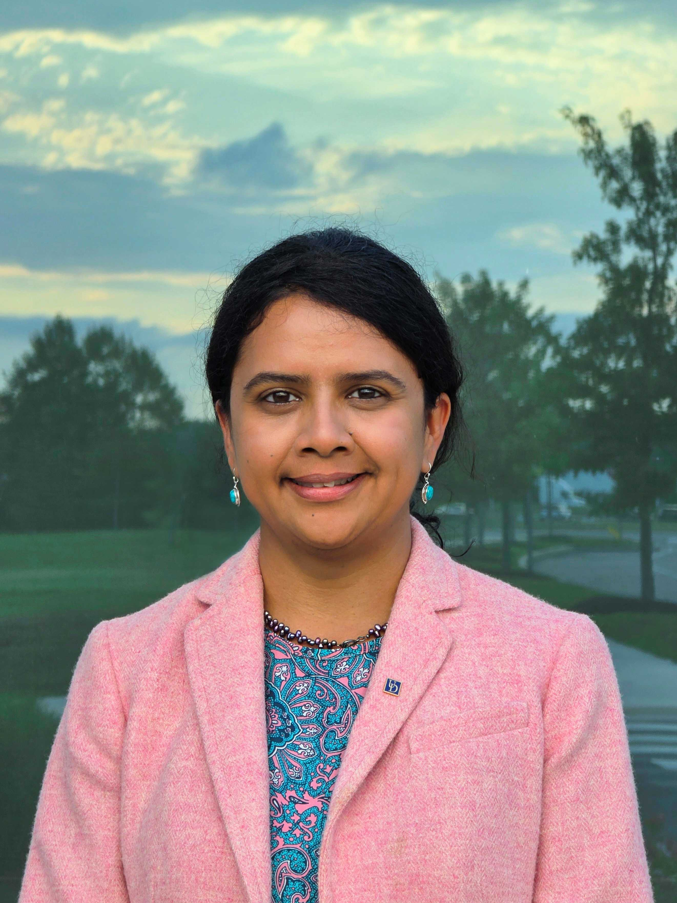

Sunita Chandrasekaran
David L. and Beverly J.C. Mills Career Development Chair
Director, First State AI Institute
Associate Professor, Dept. of Computer & Information Sciences
Computational Research and Programming Lab (CRPL)
Vice Chair, State of Delaware AI Commission
417 FinTech Innovation Hub, Newark, DE 19713, USA · University of Delaware
Email: schandra@udel.edu

About
Sunita Chandrasekaran is an Associate Professor in the Department of Computer & Information Sciences at the University of Delaware, where she holds the David L. and Beverly J.C. Mills Career Development Chair and directs the First State AI Institute. Her research spans high-performance computing, GPU-accelerated programming models, compiler validation and verification, and the application of AI/ML to scientific and biomedical problems. Her group, the Computational Research and Programming Lab (CRPL), works closely with not only DOE national laboratories — including Oak Ridge, Brookhaven, Lawrence Berkeley, and Argonne — but also industry partners such as NVIDIA, HPE, and AMD among others, along with other collaborators including NCAR, Nemours Children’s Health, Frederick National Laboratory, and HZDR (Germany) among others, to prepare scientific software for leadership-class and exascale computing systems.
She is a Senior Member of ACM and IEEE, serves on the Board of Directors and as User Representative Chair of the OpenACC Organization, and is a Directorate Advisory Committee member for Oak Ridge National Laboratory’s Computing and Computational Sciences Directorate.
Current Roles
- Director, First State AI Institute — July 2025–present
- Vice Chair, State of Delaware AI Commission — July 2024–July 2027
- David L. and Beverly J.C. Mills Career Development Chair, Dept. of Computer & Information Sciences, University of Delaware — September 2020–August 2026
- Associate Professor, Dept. of Computer & Information Sciences, University of Delaware — September 2021–present
- Directorate Advisory Committee Member, Oak Ridge National Laboratory, CCSD — April 2025–September 2028
- Board of Directors, OpenACC Organization — Spring 2020–present
- User Representative Chair, OpenACC Organization — June 2017–present
Full professional history on the Experience page.
Education
- Ph.D., School of Computer Science — Nanyang Technological University (NTU), Singapore, 2012.
Tools and Algorithms for High Level Algorithm Mapping to FPGA - B.E., Electrical & Electronics — Anna University, Chennai, India, 2005.
Experimental Studies in Statistical Signal Processing